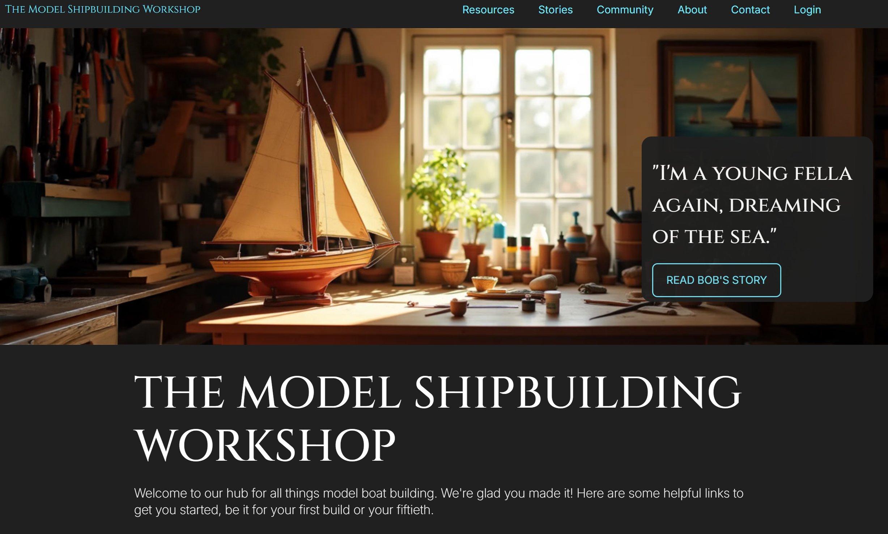
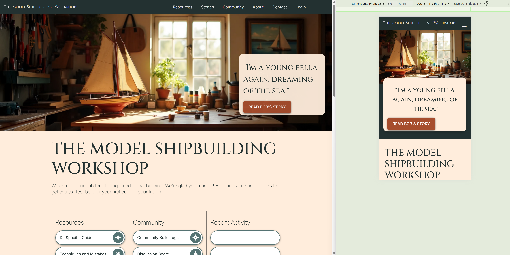

Implementation Rationale
Alignment with Client and User Needs
Navigation Bar
The Navigation bar follows WCAG 2.2 Level AA requirements by leading with semantic landmarks (such as “nav” and “button”), using aria-label = “primary” to denote this navigation feature as the main navigation item, and aria-current=”page” where relevant to denote the user’s location with regard to the navigation menu items. It uses alternative text for the non-text hamburger menu icon (Criterion 1.1.1), avoids color-only cues (Criterion 1.4.1) by including font-weight changes and slight position shifts on hover and focus, and ensures perceivable text contrast (Criterion 1.4.3) including during hover and focus.
It condenses to an expandable hamburger menu when used on a small mobile device as part of mobile-friendly design. Visceral Design elements include ensuring the element is visually distinct to unrelated elements on the page, follows the appearance of a typical navigation bar, and is located at the top of the page as is tradition with navigation bars. Behavioural Design elements includes ensuring the element operates in a familiar and predictable manner by expanding submenus on hover, and indicating clickable elements through micro-interactions.
The navigation bar helps to prevent commercial activity on the site by including a direct link to the Terms of Use of the website.
Hero Banner (Image and Hero Box)
The Hero Banner is a versatile element of the website that can be unique to each page and used to meet various client and user needs. Depending on the image chosen it can be used to communicate the unique characteristics of the community, diversity within the community, highlight events, and sharing with others. It demonstrates Visceral Design by allowing for the inclusion of visually appealing images that draw attention to the Hero Box content, Behavioural Design principles through the inclusion of a button-like navigation link, and it supports Reflective Design through the inclusion of images and quotes that reflect the community’s identity and values.
The Hero Box is designed to incite interest in stories from the community by allowing for quotes from community members that promote the unique characteristics and diversity of the community. It prompts future builders to learn more about the community and allows users to engage with the website by following the link to the parent article. The Hero Box follows visceral design principles by being visually distinct to all other elements within the page, communicating its unique function within the site. Its placement over the Hero Banner Image (to the right in web and overlaying the bottom in mobile) helps associate this element with the Hero Banner Image. Because this is a navigable element, Behavioural Design approaches were used to develop a button-link navigation element to encourage navigation to the parent article. Microinteractions are used in the button element only to indicate where the interactive elements are in this component.
It meets WCAG 2.2 standards by including alt text for the banner image (Criterion 1.1.1) and avoiding color only cues (Criterion 1.4.1). To ensure the focus visible (Criterion 2.4.7) was met I added a border of the same colour as the button background for high-contrast mode, and an invisible heading was added beneath the image for screen reading technologies.
Resource Links (Home Page)
Located at the top of the main page content on the home page, these button-like navigation links have been included to help speed up user navigation to the primary resources. They follow Behavioural Design principles by using a button-like appearance to promote their interactability including a drop shadow and microinteractions. The inclusion of a compass-like icon, which is an image many nautical enthusiasts will find familiar, is a nod to Reflective Design principles. Visceral Design principles include using space between the buttons to differentiate these elements, and separation of button categories using dividers and spacing.
The resources links meet several WCAG 2.2 guidelines including avoiding color-only cues (Criterion 1.4.1) through the inclusion of slight position shifts and font-weight changes, following a meaningful sequence (Criterion 1.3.2) by continuing from the first element to the last of each category before moving onto the next, and providing alt-text for the included images (Criterion 1.1.1). The buttons also support non-mouse navigability, which is a requirement for our users who prefer touch based or keyboard navigation rather than using a mouse, and makes navigating using these elements very friendly on a mobile device.
Recent Activity
Community Signup Form
The Community Signup Form is a dual purpose form that allows visitors to create their website profile while also signing up for the Newsletter as per the client’s requirements. The Newsletter only requires a name and email address field to be completed; all other fields have been made optional and labelled as such to meet ethical design requirements of transparency and honesty. The form uses the provided API.
The form meets WCAG 2.2 standards by providing error identification and suggestions (Criterion 3.3.1) when the form is not properly completed among several other criteria. It follows Behavioural Design principles in that it operates in a consistent manner to most other online forms, and follows Reflective Design principles allowing users to upload a profile photo that may appear in features throughout the website such as Forums or Comments sections.
Featured Stories
This element is included to help encourage meaningful interactions and engagement with the website, promote the unique characteristics and diversity of the community, and allow visitors to learn about the community by linking them to stories from the community. Following Visceral Design principles, The Featured Stories box is visually distinct from other elements on the page which indicates its unique purpose. The fully navigable cards contribute both to the visual appeal of the element, but also provide an easy-to-click navigation item suitable for small or large touch screens or keyboard navigation.
There are many components in each card, and when read by a screen-readers (such as NVDA) the content is confusing. Take for instance the first card which is a link to Bob’s story. Without the ARIA label NVDA reads “Bob and his grandaughter building a model boat together. Graphic. Sydney Sails heading level three. Bob's early memories and the hobby he shares with his grandaughter. Visited link.” Adding a dedicated ARIA label to this page ensure the screenreader now reads: "Read Bob's story: Sydney Sails. Bob's early memories and the hobby he shares with his grandaughter. Visited link." which is a lot more cohesive to someone with visual impairment.
Footer
The footer uses Visceral Design and Behavioural Design principals in that it reflects quality, predictable website design, is visually distinct from unrelated elements within the page, and provides easy navigation to pages the user may wish to quickly navigate to (such as resources or community interaction) without using the primary navigation bar. For the purposes of this project, the quicklinks sections has been used to provide quick navigation to the pages for assessment.
The footer allows provides space to acknowledge the traditional owners of the land on which this website was developed, which is an example of the ethical design approach of this site.
Sidebar
The sidebar is included to provide quick access to other articles or features of interest to the website visitor. In this example, it has been used to encourage engagement with the Featured Stories which promotes the unique characteristics of the community, diversity within the community, and meaningful engagement, and the Recent Activity feed encourages meaningful engagement. This feature is mobile friendly; in a smaller screen it drops below the page article and adopts the full width of the screen. It is visually separate to the main article through the inclusion of a dark-grey background which communicates the separateness of the content themes also. The cards in the sidebar change their ratio to be longer on the horizontal access. This differentiates them from the cards in the main section of the website and promotes their different purpose/theme while still retaining a card-like appearance.
Breadcrumb Menu
This component is deployed to pages that are not directly accessible via the navigation bar. It aids in navigation back to the page’s subcategory and provides the user with a visual indication of where they are within the sitemap. The section uses semantic html (nav tag) and aria indicating the role of the feature and the current page, to meet accessibility requirements.
Comments
This component is included to help promote meaningful connections, interactions and engagement. It is an opportunity for users to see themselves in the design, adhering to the principles of reflective design. It uses the provided Simple Community API and ignores the optional email and image fields. A timestamp helps reinforce the level and recency of user engagement with the website, which could be indicative of how quickly the community responds.
Event Listing
The Event Listing meets the clients need to highlight events. It uses only the provided API and filters the events presented to the page via date. By default, it enables users to share resources by allowing them to post their event to the page.
Variation from A3 Design Proposal
Colour Change
Upon implementation, it was realised that the proposed Feature Gray #ffeeddc did not produce adequate contrast with either dark or light text to pass WCAG 2.2 Criterion 1.4.3 Perceivable Text Contrast. It was replaced with a darker gray at #7d756e. Used with white text it meets the criterion.
Implementation of Commercial Activity Flag
!!!!!!!!!!!!!!!!!!!!
Accessibility and Ethical Considerations
ARIA
To better understand how my website would be understood by screenreader users I installed the NVDA app and familiarised myself with popular websites (such as the Commonwealth Bank website) and my own. Upon listening to my website I realised that components with many elements, such as cards, sounded unnecessarily complex. I resolved this by adding aria-label information. For example, the first card in the Featured Stories region without an ARIA labels reads as follows: “Bob and his grandaughter building a model boat together. Graphic. Sydney Sails heading level three. Bob's early memories and the hobby he shares with his grandaughter. Visited link.” With the ARIA label added it now reads: "Read Bob's story: Sydney Sails. Bob's early memories and the hobby he shares with his grandaughter. Visited link."
High Contrast Support
I regularly put my computer into high constrast mode to check that allow interactible features were appropriately highlighted. Initially, the navigation button in the hero-box was not obvious in highcontrast mode. I resolved this by putting a border around the button which made no difference to the appearance in normal mode, but allowed this button to become apparent in high-contrast mode.
Challenges and Strategies
Approach to Mobile First Design
In order to implement mobile first design, my strategy was to use a wide second screen simultaneously running two sizes of the site, one larger than 768px and one for mobile using the inspect element. This enabled me to quickly see how changes were affecting both sizes. Designs were applied first to the mobile sizing, then adjusted to suit the larger screen. I also regularly tested the website on my mobile as elements, such as the image viewer, display differently on the actual device to how they appear on computer browser.
Image Viewer
In order to meet the user needs for high resolution images, I employed that same viewer that was used in Workphase 3 with a few modifications. Unfortunately, the ARIA labelling on the viewer triggers warnings during the Accessbility Assessment, and it functioned unpredicatable on mobiles devices. In the interest of ensuring ethical design, that is to not undertake work for which I do not have the necessary skills and knowledge and developing systems that are robust, secure and user-friendly, I have opted to omit this feature from my design until I have the skills and knowledge to successfully implement it.